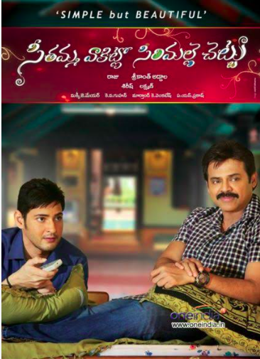
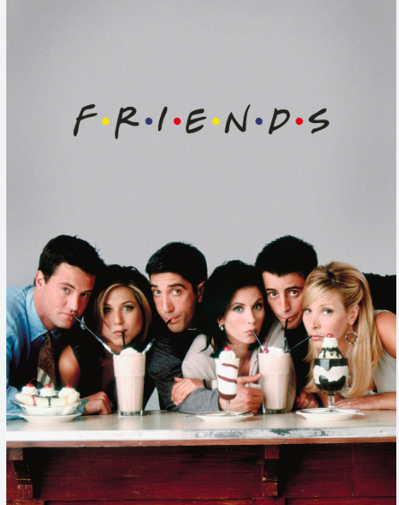

Backend Software Engineer
I build the things behind the screen — the parts nobody sees until they break.
Two years in production FinTech backends. On a loan collection platform, a wrong payment event isn’t just a bug — it becomes a compliance problem. A lot of the work is unglamorous: query and index work, audit history, making sure a customer interaction can be traced after the fact. Not because the systems are flawless. Because when something does break, you need to know where.
AI Resume Analyzer — a self-directed project connecting a Spring Boot backend to an LLM, built to see how far Java can carry an AI-integrated system without leaning on Python.
To find out whether the discipline of backend engineering — clean boundaries, predictable latency, graceful failure — holds up once an LLM call sits in the middle of the request path.
The service calls an LLM API to analyze resume content and returns a structured, predictable response shape rather than raw model output.
Repeated or similar analysis requests are cached, so the slowest and most expensive part of the system — the model call — only runs when it needs to.
Bucket4j guards the LLM endpoint so a burst of traffic degrades gracefully instead of taking the service down or the API bill up.
Packaged to run the same way locally as it would anywhere else — no "works on my machine."
This is a side door, not the main hallway. My work is still, first and foremost, backend engineering — this is just the part of the workshop where I'm allowed to make a mess.
When I’m not building things.
I don’t just listen to music. I sing it.
Not performance, not polish — the thing I reach for the same way I reach for a debugger. It’s where a system in my head finally goes quiet for a bit.
One take, unedited.
A running archive, not a ranked list. No ratings, no reviews — just what stuck.


Loan collections at scale generate a constant stream of financial events — payments, retries, reconciliations — that all have to be tracked, correct, and auditable. Getting any of that wrong isn't a bug, it's a compliance issue.
I work on the backend of Trustt's loan collection platform — Java 17 and Spring Boot microservices that process transactions, serve a customer interaction service, and maintain audit history across the business entities that touch a loan's lifecycle. Kafka handles the asynchronous work; Redis sits in front of the hot paths.
A recurring theme in this work is trading raw speed for provable correctness without giving up either — optimizing PostgreSQL queries and indexes rather than just adding cache, and building the customer interaction service so every interaction is traceable after the fact, not just fast in the moment.
The result is a system that stays fast and stays honest at the same time — the two things a financial platform can't trade off against each other.